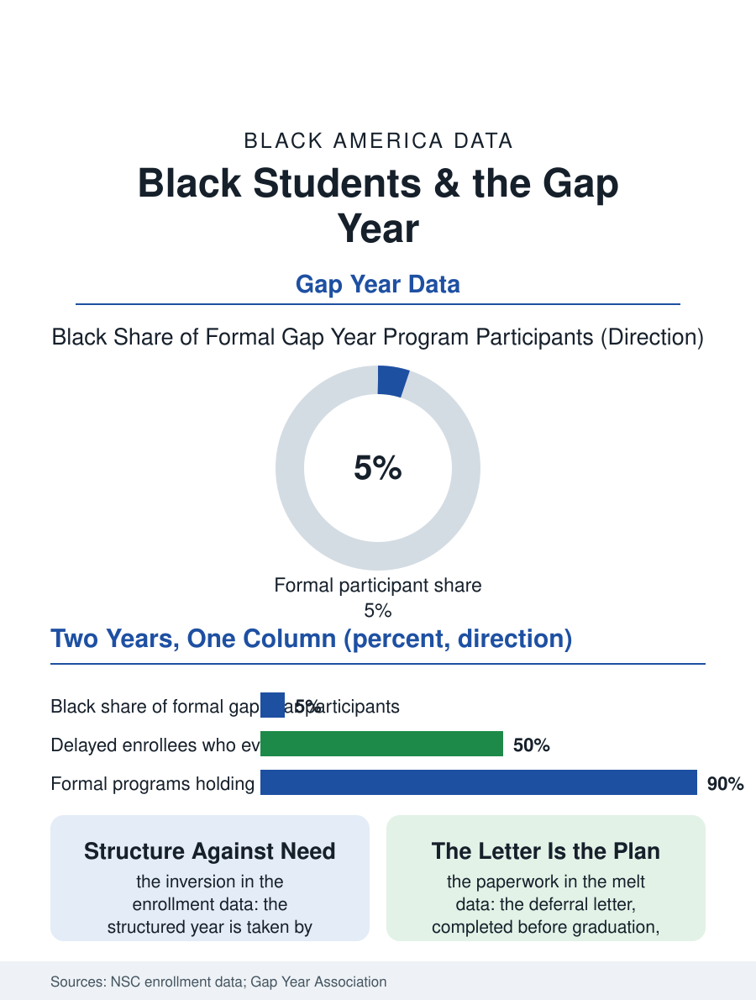

Black Education
Two Augusts: Black Students and the Gap Year
Two Augusts in one data column: the program's orientation and the shift's schedule, the deferral letter making the difference. The gap year file.

The gap year, the structured year between high school and college, is the enrichment file's most unequal instrument: a rounding error in the Black student's plan against a small but visible institution in the affluent graduate's, its programs priced like a semester and its benefits, in the participants' data, real enough that the access question is the file's whole subject. This article reads the gap year file.
Who Takes the Year
The participation data are thinner than the institution's fame: the formal gap year programs enroll in the tens of thousands nationally by the associations' counts, their demographics skewing to the private school's graduate, while the informal gap year, the year of work and drift that the low-income graduate takes without the name or the program, enrolls in the millions by the enrollment data's arithmetic, the difference between the two being the structure, the advising, and the college's held place, the deferral letter that converts the year from the melt's risk into the plan's asset. The Black graduate's gap year is overwhelmingly the informal kind in the data: the enrollment surveys show the delayed enrollment concentrated by income and race, the delayer's probability of ever enrolling falling with each term in the longitudinal studies, the year of work becoming the workforce's permanence by the increments the melt file describes at the scale of years rather than the summer. The formal programs' demographics are therefore the file's sharpest small datum, the structured year's participants being the population least at risk of the outcome the structure prevents. The military year stands inside the file as the structured year's oldest Black form, the enlistment as the gap year with the contract and the education benefit at its end, its recruits' college trajectories in the veterans file's data being the bridge year's proof at the largest scale the country runs, a fact the civilian programs' designs borrow without always citing.
The Deferral and the Melt
The college's side of the file is the deferral's administration: the institution that grants the deferral holds the admission and often the aid, converting the year into the plan, while the unadmitted or unaided delayer re-enters the application file from the workforce's side with the counselor's ratio now zero, the school counselor's caseload ending at the graduation the delayer walked in. The intervention file is the bridge year's design: the service and work programs with the college credit and the cohort, the AmeriCorps year and the apprenticeship's first year and the community college's part-time bridge, whose participants' enrollment and completion in the program data stand between the formal gap year's outcomes and the drift's, the structure's dose producing the outcome's dose in the pattern of every support file. The financial file is the year's own: the formal program's tuition against the informal year's wages, the two years' balance sheets pointing in opposite directions from the same calendar, with the aid's recalculation on the working year's income being the informal delayer's hidden tax in the federal formula's treatment of the student's earnings.
A Year, Structured or Not
The gap year file closes on the year's inevitability, because the data show the year being taken in both forms at scale, the question being only whether it is taken as the plan or as the drift, and the file's policy is the bridge's construction at the drift's actual address: the high school's final semester advising that names the year honestly, the deferral's paperwork completed before the graduation rather than reconstructed after it, and the service and work structures scaled to the population whose year is currently the workforce's unplanned gift. The associations count the formal participants in the tens of thousands and the surveys count the delayers in the millions. The file's last entry is the August after graduation in its two versions, the program's orientation and the shift's schedule, both called a gap year in the data's single column, the difference between them being the whole of the file, and the measure by which the column's honesty will be judged when the enrollment's follow-up is published. The year will be taken; the file's work is to see it taken as a plan. That is the count's plain instruction to the next cohort.
More in Black Education
Black Educational Attainment: High School Parity, the College Gap
About 89 percent of Black adults hold a high school diploma and one in four holds a bachelor's degree or higher — the attainment ladder, the college completion gap, and the generational trend.
Historically Black Colleges and Universities: Enrollment and Degrees
More than 100 HBCUs enroll roughly 290,000 students and award about one in six Black bachelor's degrees — an outsized share from a small sector. The federal education data.
Black College Enrollment: 2.4 Million Students
About 2.4 million Black students are enrolled in American colleges — nearly two-thirds of them women. The NCES enrollment data by sector, level, and trend.
Source: National Student Clearinghouse delayed enrollment research; Gap Year Association program data.